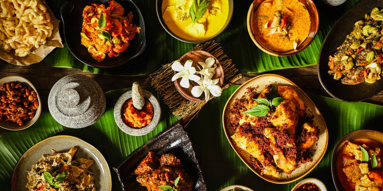
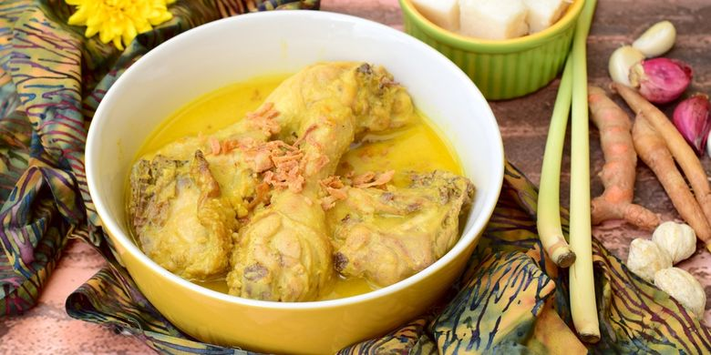

Menu Makanan
Menu makanan di kantin bu yoto cukup bervariasi. Ini juga menjadi alasan mahasiswa tidak bosan untuk membeli makan di sini
Nasi Pecel

Nasi pecel atau sega pecel adalah hidangan nasi Indonesia dari Jawa yang disajikan dengan pecel. Pecel dalam hidangan nasi pecel biasanya dibuat dari kangkung, kacang panjang, daun singkong, daun pepaya, atau bunga turi yang dicampur dengan sambal kacang.
Opor Ayam
Opor ayam sebenarnya adalah ayam rebus yang diberi bumbu kental dari santan yang ditambah berbagai bumbu seperti serai, kencur, dan sebagainya.